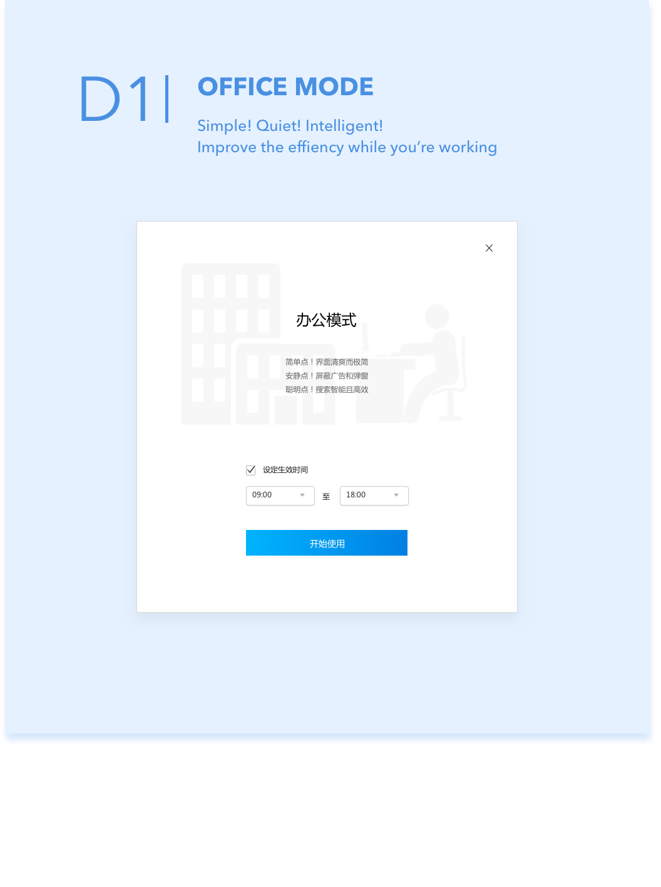
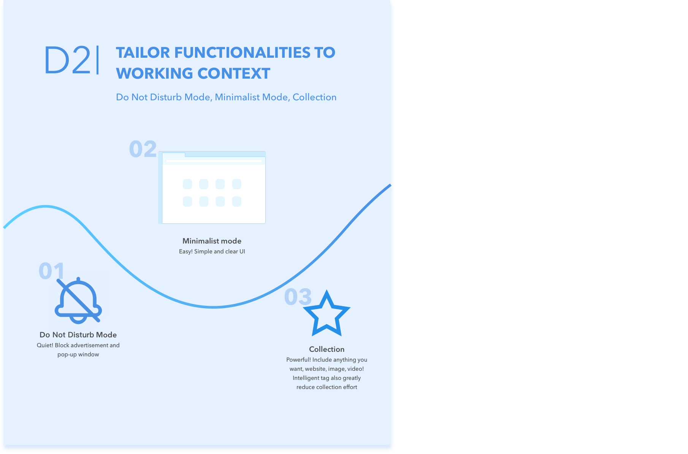
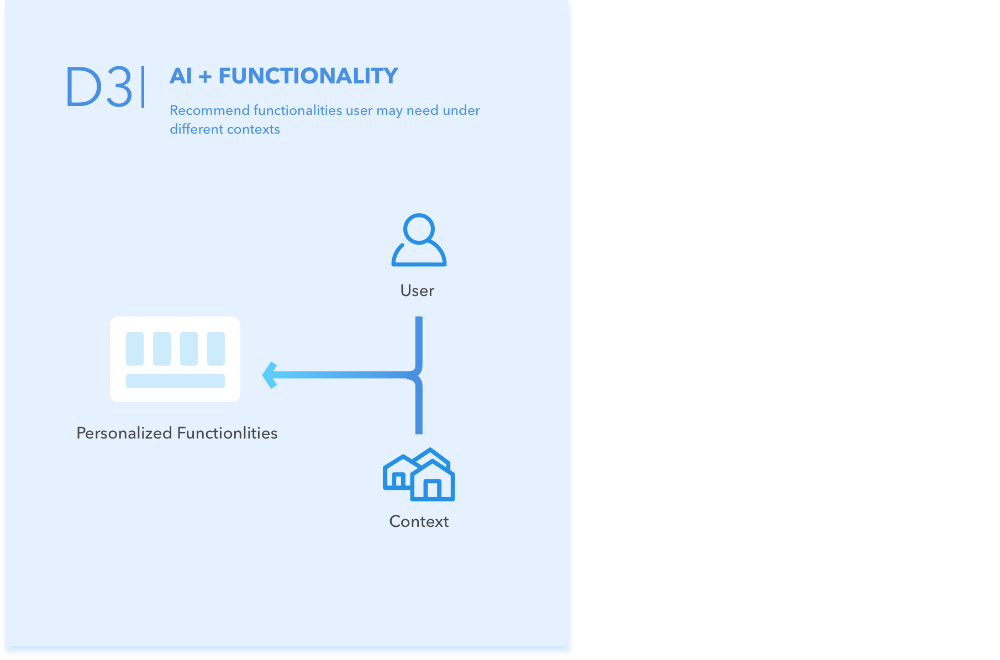

OVERVIEW
| ROLE | Interaction Designer |
| Visual Designer | |
| DURATION | Summer 2018 |
| @ Tencent Internship | |
| TAG | UI Personalization |
| Functionality Recommendation | |
| TOOL | Sketch |
| Principle | |
| SAP Scenes | |
| Xmind |
BACKGROUND
QB(QQ Browser, which has largest monthly active users among Chinese web browsers) has diverse user group and contexts include both entertainment and work. So QB keeps rolling out new functionalities like providing great movie or reading e-books experience.
But when all these functionalities put together, will users confuse about it?
A common solution for accurate recommendation is personalization.
A lot of products already provide personalizing news, feeds, or activities, but how about personalizing UI? That’s when I initiated an idea of personalizing UI using machine learning, and recommending more accurate functionalities to users.

UNDERSTANDING

SURVEY 1
SURVEY 2
CONTEXTUAL INQUIRY

DESIGN PROCESS
IDEATION
Based on the problem space(various functionalities are for different context), I mapped all functionalities to different contexts and finally categorized context to working and entertainment. To satisfy users’ needs under both these two contexts, I quickly brought up three alternatives. First two especially tailored for working context. And the last one try to suit both.

DESIGN ALTERNATIVES
I presented the above design alternatives to the whole design team and obtained valuable feedback. Following are main design rationales for our final decision.
  DESIGN DECISIONS
Based on the pros and cons for each design alternative, how to make a choice? One of our problem space is 'unaware of various functionalities', how to let functionalities provide easier access to users, especially under working contexts? One solutions is provide powerful features which is especially tailored for working contexst. The other is to recommend accurate functionalities user may need under differnt contexts.:

CHALLENGE: CUSTOMIZATION VS. EFFICIENCY
For “Do Not Disturb” mode, we provide users auto on/off at working time. Ideally, two time slots should be provided(morning and afternoon) and all provide customization.
But is it too much for users to start? How to balance between complete customization and easy interaction?

Solution 1: Complete Customization.
Cons: Users may confuse why these two time slots.

Solution 2:
Pros: More direct to tell users what the break time is for(lunch break).
Cons: Still too much customization

Solution 3: Quick start and customization later.
At the beginning, users just need to select to auto open on office hour or not(hover will show specific time), and they can customize it later at toolbar.
FINAL DESIGN
AI + FUNCTIONALITY
Functionality Guide
After users jump into the functionality guide, 4 tabs are provided:
- Recommend Functions: Low Frequency but consistent user usage contexts - Use it!!!
- Unusual Functions: Low Frequency and not consistent with user usage contexts - Uninstall it!
- Function Laboratory: Try new functionalities!
- Manage Functions (including all functions turning on/off)

DO NOT DISTURB MODE
Visual Design
Mode control will be integrated in main menu. Thus I drew different alternatives. Considering the consistency with other elements in main menu, we chose the one highlighted with blue:

Final Design

COLLECTION AND NOTE
Intelligent tag instead of hierarchy structure of bookmark
Collection

Edit Note

WHAT I LEARNED FROM TENCENT INTERNSHIP
Business Side
Balancing between business needs and users’ needs
User-centered design. It’s true, but in real-world we need balance with business needs. Such as from users’ needs, providing less functionalities can simplify workload and enhance efficiency. But more functionalities can increase user retention from business target. How to solve this conflict? This is where UX designer is needed to solve the problem and come up with new ideas! With keeping in mind both users’ needs and business target constraints.
Incorporate implementation cost and design values into consideration
Thinking of implementation effort is already a natural process during my design process, but what’s more, good designer should try to simplify solution as much as possible, especially under constraints like time or implementation costs. For example, when I redesigned game center, considering the ddl for rapid releasing, instead of incorporating something new at first version, it’s better to optimize whole flow but use current widgets which is easier to implement. And then the expected widgets can also present PM for next version’s design.
Facilitate Process with Communication
Closer cooperation with PM
Especially when coming up with new ideas, closer cooperate with PM to make sure if the problem exists and suitable for target user group. This step is crucial to make sure everyone in the team is on the same page.
Asking about feedback can greatly facilitate whole process
Whenever stuck by multiple designs, not just list pros and cons and try to figure out by individually. It’s better to draw different designs to get others’ feedback or use AB testing to get users’ feedback, which will greatly facilitate iteration process.
What I’m good at:
Coming up with new ideas
During my three months’ internship, I came up with new ideas for three projects. I love brainstorming new ideas using all kinds of technologies! For me, I feel excited to incorporate advanced technology into daily product to provide a little more intelligence and efficiency.
My strength in technology
I really appreciate the opportunity to share my knowledge of AI technologies with others. During my internship, I wrote an article “A designer’s guide to machine learning” and conducted a tech talk for design team about ML products, which to some extent enhance our team even whole Tencent MXD’s understanding and interest in machine learning. Moreover, after this internship, I have more passion for AI products and cannot wait to use my understanding of constraints and ability of technologies to create great user experience products!